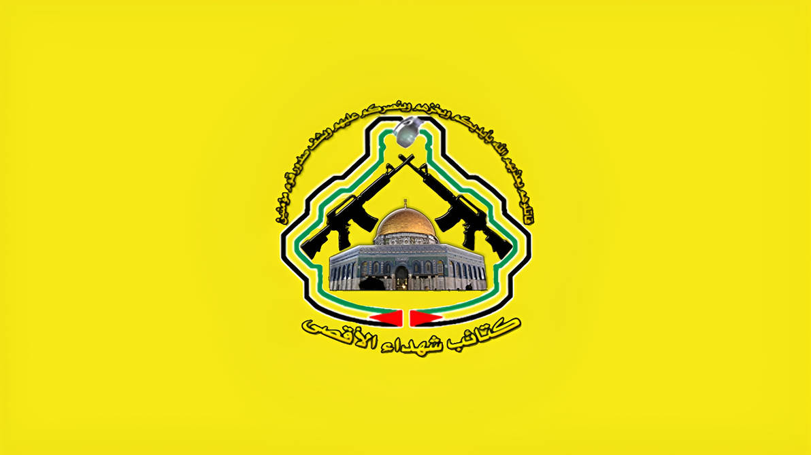
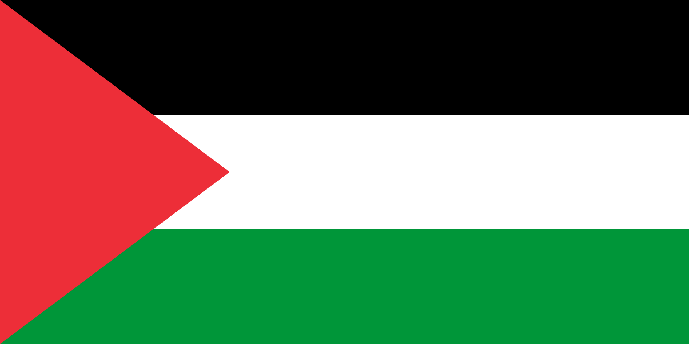
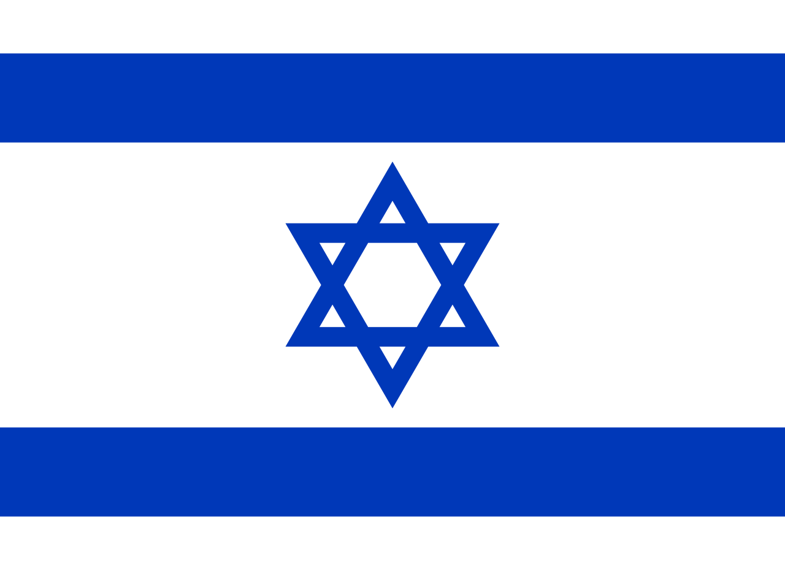

كتائب شهداء الأقصى
Al Aqsa Martyrs' Brigades
Name pronounciation in Arabic
Kata2ib Shuhadaa Al-2Aqsa
Katáʔib ʃuhadá Alʔaqsa
It's Origins
In 2000, durring the Second Intifada, the unit was formed. The Unit was created in the Balata camp, after a controversial visit from the Israeli Prime Minister Ariel Sharon. Durring the Intifada the young unit indulged in many battles, such as for example in Jenin.
Al Aqsa Martyrs' Brigades
{kind=link}
{kind=link}
| Founder | Unknown |
|---|---|
| Leader |
Ibrahim Al-Nabulsi (possibly) Yasser Arafat (2000-2004) |
| Founded In | Balata Camp |
| Part of | |
| Allies |
 Palestinian authority(until 2022) |
| Enemies |
 Israel Palestinian Authority (2022-present) |
| Battles |
Second Intifada ├ Battle of Jenin ├ Siege of Bethlehem └ Battle of Nablus Gaza War (2008-2009) Gaza War (2012) Gaza War (2014) 2021 Israel Palestine Crisis 2023 Hamas-Israel war ├ Battle of Beit Hanoun ├ Siege of Khan Yunis ├ Insurgency in northern Gaza Strip ├ Rafah Offensive ├ July 2024 Khan Yunis Incursion ├ Third battle of Khan Yunis ├ Siege of northern Gaza └ Israeli west bank incursions ├ Tulkarm Incursion ├ Operation Summer Camps └ July 2024 West Bank unrest West Bank Insurgency against PA (2022-present) |
The Second Intifada
Durring the Second Intifada, the group was formed, and quickly after forming, it already got ready, and started clashing with the Israelis in Jenin. It was also involved in the Bethlehem battle, and in the Battle of Nablus. Later on it stoped being as relevant, as Hamas and Palestinian Islamic Jihad both took over the fighting in the Gaza Strip, where the unit was not present.
The 2007 Issues with the Palestinian Authority
In 2007, Mahmoud Abbas, President of Palestine, declared, that all armed militias, are now criminalized, this caused panic and anger among the group, however this was later solved, and the unit remained an armed wing of Fatah.
2007 Amnesty Deal
In july 2007 the Palestinian Authority did a amnesty deal with the militia, where the militiamen would not be arrested, if the militia renounces violence against Israel, resulting in 178 gunmen surrendering their weapons to the PA.
On 22 August 2007 however, the group backed off from the agreement.
Organization in early 2023
Al Aqsa Martyrs' Brigades (HeadQuarters: Balata Camp)
├ Askar Battalion (Askar Camp, Nablus)
├ As-Samu Battalion (As-Samu)
├ Beit Ummar Battalion (Beit Ummar)
├ Al-Fajr Battalion (Beita Al-Tahta)
└ Tulkarem Battalion (Tulkarem)
Organization in 2024
Al Aqsa Martyrs' Brigades (HeadQuarters: Balata Camp)
├ Balata Battalion (Balata Camp, Nablus)
├ Askar Battalion (Askar Camp, Nablus)
├ As-Samu Battalion (As-Samu)
├ Beit Ummar Battalion (Beit Ummar)
├ Al-Fajr Battalion (Beita Al-Tahta)
├ Qalqilya Battalion (Qalqilya)
├ Tulkarem Battalion (Tulkarem)
├ Tubas Battalion (Tubas)
├ Jenin Battalion (Jenin Camp)
└ The Hornets' Nest (Jenin Camp)